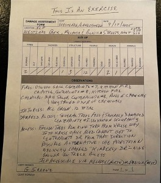

{kind=link}
151, K7QQB, VARA FM, W7OWO-10, 145.030, AURORA, CLACKAMAS, OREGON

Original image size: 782 x 601 pixels, 96 dpi, 99.9 kbytes
Your teammates' exercise material is below. You should see their CERT Form #1. Each AUXC should have at least one thumbnail. Click on the thumbnail to see the original image.
Use the browser's back button to return to this page from the full-sized image.
Your exercise requirements this week were to:
Note that if an AUXC checked in through multiple RMSs, then each check-in sentence is provided at the top of their information.
Jump to a specific AUXC's check-in material:
151, KI7DGC, VARA FM, W7YAM-12, 145.090, LAKE OSWEGO, CLACKAMAS, OREGON
Original image size: 569 x 532 pixels, 96 dpi, 108.8 kbytes
151, K7QQB, VARA FM, W7OWO-10, 145.030, AURORA, CLACKAMAS, OREGON
Original image size: 782 x 601 pixels, 96 dpi, 99.9 kbytes
151, KI7FCG, PACKET, K7YVO-10, 144.930, BORING, CLACKAMAS, OR
Original image size: 694 x 518 pixels, 96 dpi, 51.9 kbytes
151, KI7BDP, VARA FM, KD7ZDO-11, 145.770, OREGON CITY, CLACKAMAS, OR

***THIS IS AN EXERCISE***
SEE ATTACHED CERT FORM #1 FROM G. GREENE.
GAFFNEY LANE NEIGHBOURHOOD, CLAIRMONT MOBILE HOME PARK SURVEY
SUMMARY:
3 ACTIVE STUCTURE FIRES, 7 OUT.
1 WATER LEAK/BROKEN PIPE
15 DAMAGED STRUCTURES (MOBILE HOMES), 1 COLLAPSED
11 GREEN LEVEL INJURIES, 2 NEED TRANSPORT DUE TO MOBILITY ISSUES
Original image size: 853 x 640 pixels, 72 dpi, 71.7 kbytes
151, W6RKT, VARA FM, K7LSC-10, 144.960, Battle Ground, Clark, WA

Original image size: 1133 x 886 pixels, 96 dpi, 114.9 kbytes
151, KD7PFH, Telnet, N/A, 0.000, Lake Oswego, Clackamas, OR
Original image size: 640 x 448 pixels, 96 dpi, 46.3 kbytes
151, KJ7JCR, VARA FM, W7BVT-10, 145.020, Lake Oswego, Clackamas, Oregon
Original image size: 798 x 598 pixels, dpi, 68.3 kbytes
151, N1ACW, VARA FM, K7LSC-10, 144.960, Lake Oswego, Clackamas, Oregon
151, N1ACW/M, VARA FM, KC7DMF, 144.940, Deschutes NF, Deschutes, Oregon

I scanned the completed CERT Form #1 (click on the image to the right to see the full-sized form) since I knew that this would present the document square to the image capturing device. Scanners typically have a white point that is similar to scanner paper is another plus. Squaring the image for a camera is really, really hard! (especially without getting a shadow of yourself over the image.)
Digital cameras, including the one built-into your cell phone, don't work like the scanner. Cameras pretend that an image is greyscale and they are designed to assume that the average of each pixels' value is a neutral tone This is chosen to be a specific shade of grey (there's more than fifty, BTW) and is known as middle grey or 18% greycard. You could blame Ansel Adams and his Zone system for this but the truth is - cameras are really dumb!

This assumption is good for most images - like urban or country landscapes and even this image of my Mountain Lakes 100 station. What happens when the subject is mostly white, like a form on white paper . Remember that the camera assumes that an image's greyscale equivalent sums to middle grey. The camera senses the image and sets the exposure to accomplish that. White fades to grey due to the underexposure.
Note that the same works in reverse: if an image is mostly black (like a blackboard or the night sky), your camera will overexpose the image because of its middle grey average assumption.
So, why do some images come out light brown? That's all to do with the illumination. Warm lighting will do that. Under fluorescent light, paper will display with a green tinge.
Don't worry too much about this. Any clearly readable image is a good result. However, if you know how to tweak your camera's settings (increase exposure or set the white point for the artificial lighting, then that's a plus!
Original image size: 612 x 792 pixels, 72 dpi, 96.3 kbytes
{kind=link}
{kind=link}
{kind=link}